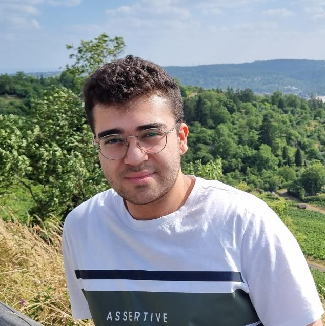

Hello, I'm Onur
Aspiring Backend Developer | Passionate about AI and Simulations
I am a 3rd-year Computer Engineering student at Ankara Yıldırım Beyazıt University. I am a team-oriented individual who can also demonstrate leadership skills when needed. I am particularly interested in innovative projects in the fields of web development, backend, and artificial intelligence. Thanks to various courses and projects, I have gained experience in multiple programming languages and continue to improve myself through continuous learning and curiosity. I follow technology trends closely and adopt a disciplined, open-minded, and solution-focused mindset. My goal is to contribute to impactful software projects both individually and collaboratively.